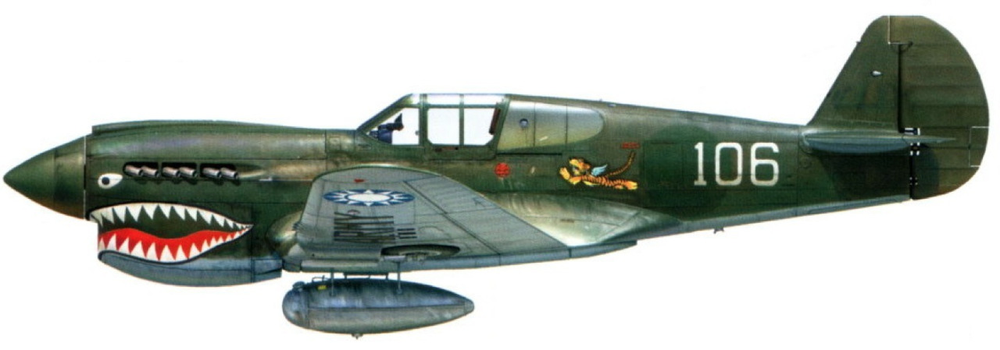
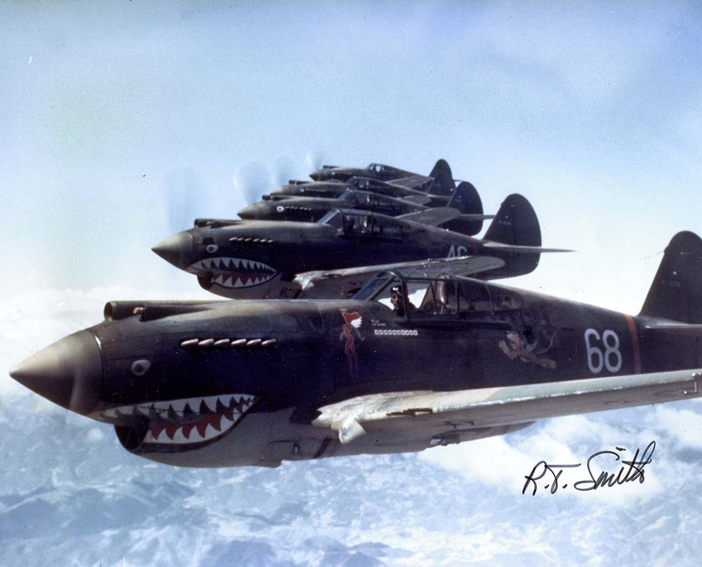

Home | Insignia | P40 | Jacket | Chit | Burma Road

P-40 Warhawk was the name the United States Army Air Corps adopted for all P-40 models.
The shark-faced nose art of the Flying Tigers remains among the most recognizable image of any individual combat aircraft or combat unit of World War II. The insignia can be seen in the middle of the body of the aircraft.
The Flying Tigers were highly successful, and its feats were widely published, to boost sagging public morale at home. According to international journalists' official records, in just 6 1/2 months, the Flying Tigers destroyed 115 enemy aircraft for the loss of just four of their own in air-to-air combat.

Hell's Angels, Flying Tigers 1942